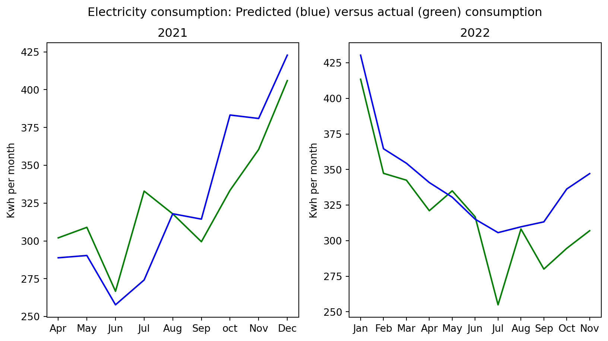

When I pay for electricity I pay one month in advance based on my estimated consumption and the estimated market price on electricity. If I consume more or less, or if the prices are higher or lower than expected, the difference in payment is adjusted for the coming months. Roughly translated, my bill looks something like this:
Dear customer
It is time to pay for your electricity at Denmarkstreet 10, 8100 Aarhus
Your prepayment for the next period: 01.07.2022 – 31.07.2022
We estimate that you will use
305.649 kWh
1151.01 DKK
The consumption includes subscribtion and fixed fees.
Your statement from last period: 01.06.2022 – 30.06.2022
We estimated you to use
315.096 kWh
1182.98 DKK
You used
316.802 kWh
1189.07 DKK
Difference to be paid
6.09 DKK
The consumption includes subscribtion and fixed fees.
Your total payment (including vat) 1157.11 DKK
Notice that you may experience a small difference between the totals and sums of each item, because the calculation is done using more decimal places than reflected on the bill.
From a everyday case of interacting with data (and from a data design perspective), there are quite a few things to unpack. Let’s invent some design principles1.
First principle: If you present the user with a prediction about consumption you have to explain the basis of that prediction.
Why? Because that will ensure transparency and allow the consumer to engage with the data, seek out more information and potentially use the information to act in their best interest. Secondly, one could argue that the right to an explanation is in effect here, given that there are financial implications, but that is just a detail.
Now, what do the provider give in terms of information about the estimation? From the bill and the website, we learn that it is based on “my expected consumption and the expected price per kWH for the next period.” This is supplemented by a general statement about recent increase in prices and consumption: “if you experience your bill to be higher than usual in the coming montsh, it is because the prices on electricity has gone up in the last months. The winter season also impact your consumption leading to a higher electricity bill”
We do learn that the bill combines two estimates. They estimate my consumption and then the electricity price one month out. The first – consumption – I should be able to influence, so lets take a look at that. I went through all my bills back to April 2020 when they introduced the estimate model and collected the data.
Show the code
import numpy as npimport matplotlib.pyplot as pltactual2021 = np.array([302.024,308.978,266.689,332.947,317.887,299.468,333.479,360.479,406.004])predicted2021 = np.array([288.835,290.35,257.746,274.158,317.961,314.396,383.261,380.969,422.834])actual2022 = np.array([413.49,347.342,342.519,321.065,335.04,316.802,254.906,308.2,280.031,294.629, 307])predicted2022 = np.array([430.406,364.626,354.423,340.85,330.57,315.096,305.642,309.731,313.22,336.317, 347.14])x2020 = np.arange(9)x2021 = np.arange(11)fig,axes = plt.subplots(nrows=1, ncols=2, figsize=(10,5))fig.suptitle("Electricity consumption: Predicted (blue) versus actual (green) consumption")#fig.ylabel("Kwh per month")axes[0].plot(x2020, actual2021, color="green")axes[0].plot(x2020, predicted2021, color="blue")axes[0].set_ylabel("Kwh per month")axes[0].set_xticks(np.arange(9), ["Apr","May", "Jun", "Jul", "Aug", "Sep", "oct", "Nov", "Dec"])axes[0].set_title("2021")axes[1].plot(x2021, actual2022, color="green")axes[1].plot(x2021, predicted2022, color="blue")axes[1].set_ylabel("Kwh per month")axes[1].set_xticks(np.arange(11), ["Jan","Feb", "Mar", "Apr", "May", "Jun", "Jul", "Aug", "Sep", "Oct", "Nov"])axes[1].set_title("2022")plt.show()

This indicates that the estimation is not particularly accurate. The example bill from June 2022 above is one of three where the estimation have been somewhat spot on (August 2021 and May 2022 are similar). Based on this, I tried to poke around with a bit of basic math to see if there was a pattern to the estimate, e.g. that they used my consumption from the same month last year, did some sort of mean across multiple years or months, or if there was some trend analysis going on.
Based on this, I could not explain the estimate directly.
Footnotes
I’m just pulling these out of thin, yet very experience, air. I will synthesise these and present more examples elsewhere↩︎